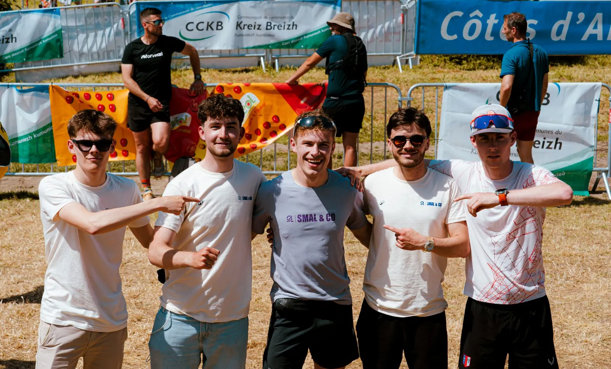
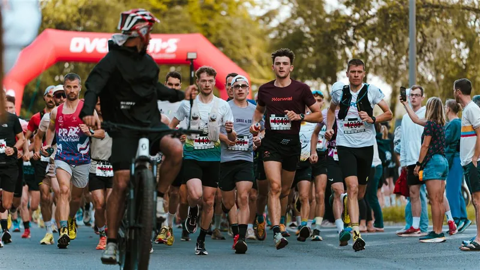
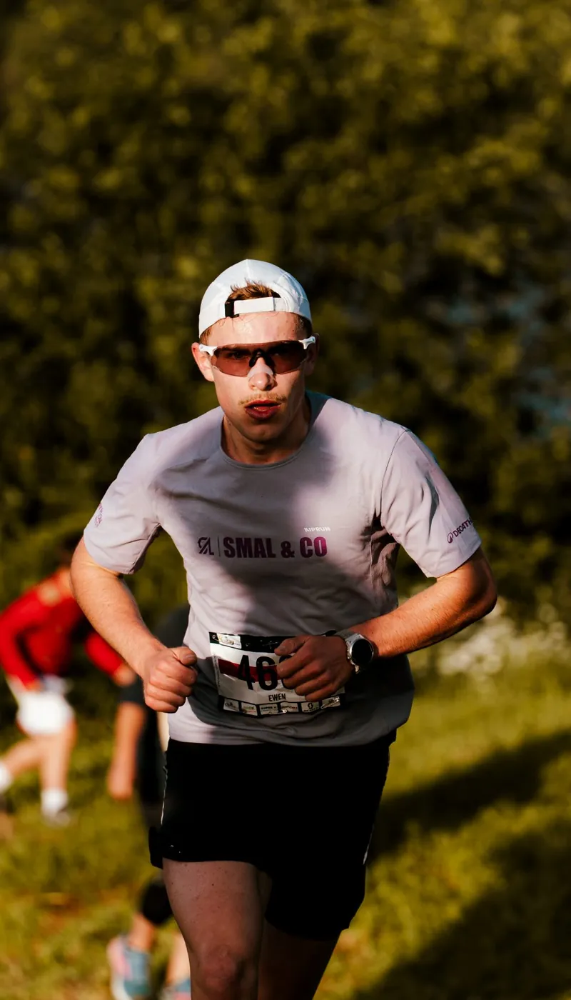
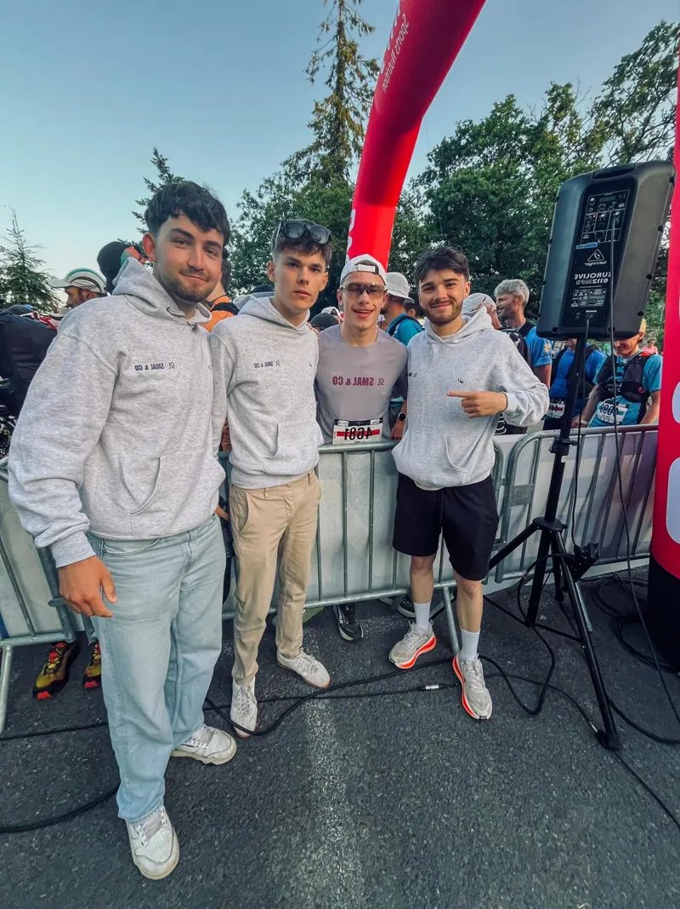
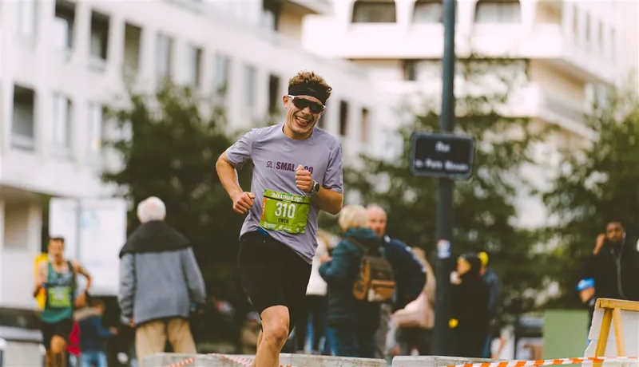

Pôle 02 · Running & trail
Running & trail
Du bitume aux sentiers côtiers bretons. Une section running et trail engagée sur les courses régionales dans un esprit d’émulation et de cohésion.

Nos missions
Courir ensemble, sous les mêmes couleurs.
- Création
- Mai 2026, Guerlédan
- Disciplines
- Route · Trail court · Trail long
- Effectif
- 1 coureur aujourd’hui, une Team soudée demain
Route, trail court, trail long : un pôle qui se construit en parallèle du cyclisme, avec son propre suivi.
Des résultats individuels déjà là, à inscrire dans une dynamique collective.
Réalisations & sorties marquantes
Nos premiers kilomètres
Guerlédan
La naissance de la section : toute l’équipe au départ autour du lac de Guerlédan.
Rennes
Un coureur SMAL & CO prend le départ dans les rues de Rennes.
Sorties communes
Des entraînements partagés entre membres, sur route comme sur les sentiers bretons.




Projets futurs
La suite s’écrit en baskets
- Constituer un collectif de coureurs identifiable
- Définir des objectifs individuels et collectifs par athlète
- Créer des tenues running et trail à nos couleurs – à cette fin, nous recherchons le soutien d’un sponsor affirmé (sponsor titre) pour s’afficher sur nos futures tenues de course à pied
- Engager le collectif sur des courses régionales, puis plus ambitieuses
- Imaginer nos propres sorties et rendez-vous running
Fais-toi connaître & soutiens l’aventure
Suis les coulisses du pôle running et viens échanger avec nous sur nos réseaux officiels.